Assignments Involving Kinetics Data Analysis
Examples from REB, The Book
Example 11.5.1 A rate expression for liquid-phase reaction (1) is needed for the design of a new batch reactor process. Preliminary studies suggest that a temperature in the range of 65 to 90 °C will be needed. At lower temperatures the reaction proceeds too slowly, and at higher temperatures undesired side reactions begin to occur. At a temperature of ca. 80 °C, it takes approximately 30 minutes for the reaction to go to completion. The preliminary experiments suggest that the reaction is irreversible and that the rate is not affected by the concentration of the product, Z. It is expected that the reactant, A, will be available at concentrations between 0.8 and 1.2 M. A perfectly mixed, 1 L BSTR is available for kinetics experiments. The reactor has a sampling port that allows the concentration of A to be measured while the reaction is taking place. Design a set of experiments to generate kinetics data that can be used to develop a rate expression.
\[ A \rightarrow Z \tag{1} \]
Example 11.5.2 The liquid-phase reaction between reactants A and B, reaction (1), was studied in a 100 cm3 laboratory CSTR. The reactor operated at steady state, the volumetric flow rate and the inlet concentrations of each of the reagents were adjusted from one experiment to the next, and the steady-state outlet concentration of reagent Y was measured. Use the experimental data to assess the accuracy with which the rate expression shown in equation (2) describes the rate of reaction (1). The rate coefficient in equation (2) can be assumed to exhibit Arrhenius temperature dependence.
\[ A + B \rightarrow Y + Z \tag{1} \]
\[ r = kC_AC_B \tag{2} \]
The first few data points are shown in Table 1. The full data set is available in the file example_11_5_2_data.csv.

Example 11.5.3 The liquid-phase disproportionation of reagent A, reaction (1), is reversible. Kinetics data were generated in a 3 gal CSTR by varying the temperature, volumetric flow rate and feed concentrations of reagents A, Y, and Z from experiment to experiment. In each experiment the outlet concentration of reagent A was measured. Use the resulting data to assess the accuracy of the rate expression shown in equation (2) using a fitting function and using a linearized response model.
Note that thermodynamic data to calculate the equilibrium constant for reaction (1) are not available, so both the forward and reverse rate coefficients in the rate expression must be estimated from the experimental data.
\[ A \leftrightarrows Y + Z \tag{1} \]
\[ r = k_fC_A^2 - k_rC_YC_Z \tag{2} \]
The first few data points are shown in Table 2. The full data set is available in the file example_11_5_3_data.csv.

Example 11.5.4 The gas-phase reaction between reagents A and B was studied in an ideal, isothermal, 500 cm3 BSTR. In all experiments the reactor was charged with reagents A and B only, but with varying partial pressures. The fractional conversion of reagent A was measured at seven different elapsed times in each experiment. Experiments were performed at three different temperatures. Assess the accuracy of the rate expression shown in equation (2) using both a fitting function approach and a linear model approach.
\[ A + B \rightarrow Y + Z \tag{1} \]
\[ r = k P_A P_B \tag{2} \]
The experimental data are provided in the file, example_11_5_4_data.csv. The first few data points from that file are shown in Table 3.

Example 11.5.5 Reversible, gas-phase reaction (1) was studied in a PFR at 1 atm. In all experiments the same amount of catalyst, 3.0 g, was present in the reactor, forming a small packed bed. The apparent density of the catalyst bed was constant, and pressure drop across the catalyst bed was negligible. The total inlet molar flow rate was also the same in all experiments and equal to 2.5 mol h–1. The inlet mole fractions of A, B, Y, and Z and the temperature were varied in the experiments and the partial pressure of A, in atm, at the reactor outlet was recorded.
Preliminary experiments showed that the rate does not depend upon the partial pressure of reagent Z, and the reaction is inhibited by reagent Y. The power-law rate expression shown in equation (2) has been proposed to model the rate. The equilibrium constant, \(K\) , in equation (2) can be calculated using equation (3) where \(K_0\) equals 0.0132 and \(\Delta H\) equals –9096 cal mol–1.
Use the resulting data to assess the accuracy of the proposed rate expression.
\[ A + B \rightarrow Y + Z \tag{1} \]
\[ r = k\,P_{A}^{\alpha_A}\,P_{B}^{\alpha_B}\,P_{Y}^{\alpha_Y}\left( 1 - \frac{P_YP_Z}{KP_AP_B} \right) \tag{2} \]
\[ K = K_0 \exp{\left( \frac{-\Delta H}{RT}\right)} \tag{3} \]
The experimental data are provided in the file, example_11_5_5_data.csv. The first few data points from that file are shown in Table 4.
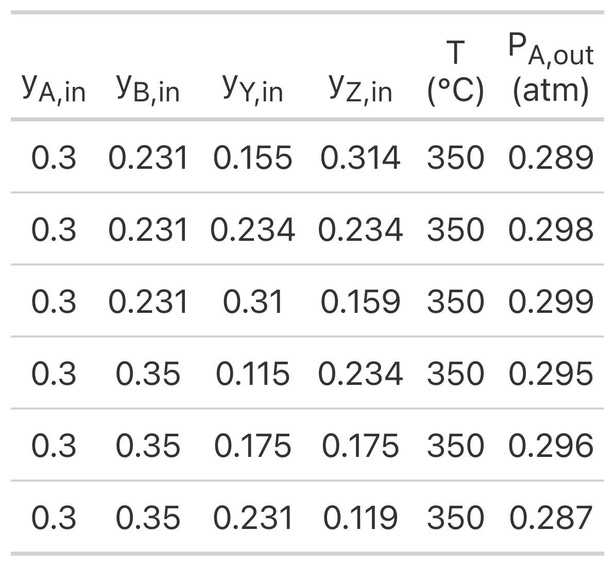
Example 11.5.6 Kinetics data for liquid-phase reaction (1) were generated using an ideal, isothermal, 1 L BSTR. The reaction is irreversible, and preliminary analysis indicated that the rate is not affected by the concentration of the product, Z. The experimental design used the initial concentration of A and the temperature as factors. Twelve experiments were performed wherein the temperature and initial concentration of reagent A were set after which the concentration of reagent A was measured at six reaction times, giving a set of 72 experimental data points. The rate expression shown in equation (2) has been proposed for this reaction. The rate coefficient in equation (2) is expected to display Arrhenius temperature dependence. Compare the best values for the Arrhenius pre-exponential factor and activation energy determined using (a) a fitting function, (b) a linearized model, and (c) an approximate model. Then assess the accuracy of the proposed first order rate expression.
\[ A \rightarrow Z \tag{1} \]
\[ r = k C_A \tag{2} \]
Note that these data were generated using the experimental design from Example 11.5.1. The experimental data are provided in the file, example_11_5_6_data.csv. The first few data points from that file are shown in Table 5.

Example 11.5.6 Solutions
Example 11.5.6 Calculations
Learning Activities from REB, The Course
Learning Activity 25 The enzymatic dehydration of substrate S to product P, reaction (1), was studied in a 50 ml BSTR. Three experiments were performed. The temperature was the same in all three experiments, but the initial concentration of substrate S differed. At the start of each experiment product P was not present in the reactor. The reaction takes place in aqueous solution, so the concentration of water may be assumed to be constant. The concentration of product P was measured at 10 min intervals during 2 h of reaction in each of the experiments. Use the resulting data to assess the accuracy of the Michaelis-Menten rate expression, equation (2), for this reaction.
\[ S \rightarrow P + H_2O \tag{1} \]
\[ r = \frac{V_{max}C_S}{K_m + C_S} \tag{2} \]
The experimental data are provided in the file, activity_25_data.csv. The first few data points from that file are shown in Table 6.
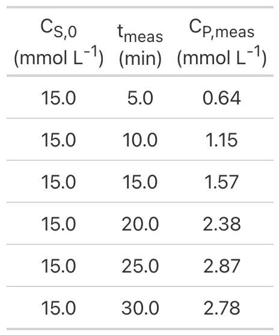
Learning Activity 25 Calculations
Learning Activity 26 An isothermal, steady-state PFR with negligible pressure drop was used to generate kinetics data for liquid-phase reaction (1). In each experiment the temperature (°C), feed concentration of A (M), feed concentration of B (M), and space time (min) were set and the outlet concentration of A (M) was measured. The PFR diameter was 0.3 dm and its length, 10 dm.
In the rate expression, equation (2), the rate coefficient displays Arrhenius temperature dependence. Use the experimental data to estimate the pre-exponential factor and activation energy using (a) a fitting function and (b) a linearized reactor model. Compare the results from the two parameter estimation approaches.
\[ A + B \rightarrow Y + Z \tag{1} \]
\[ r=kC_AC_B \tag{2} \]
The experimental data are provided in the file, activity_26_data.csv. The first few data points from that file are shown in Table 7.
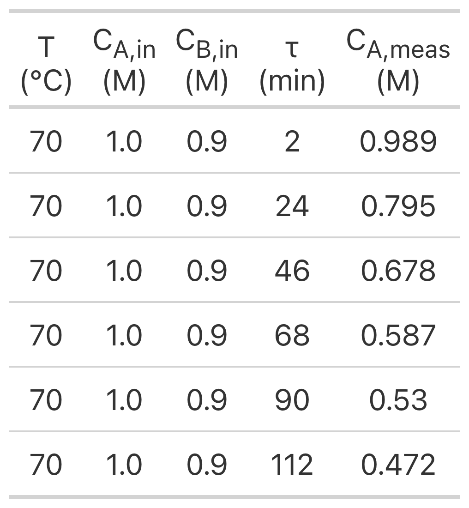
Learning Activity 26 Calculations
Learning Activity 27 Experiments have been performed using an isothermal BSTR for the purpose of developing a rate expression for liquid-phase reaction (1). At the start of each experiment, the reactor contained 1 gal of a solution containing A and B at one of three temperatures (150 °F, 160 °F, or 170 °F). In each experiment, the reaction proceeded isothermally and the concentration of Z was measured at reaction times of 10, 30, and 50 min. Use the resulting data and a linearized BSTR model to assess the accuracy of the rate expression proposed in equation (2), assuming Arrhenius temperature dependence for the rate coefficient, k.
\[ A + B \rightarrow Y + Z \tag{1} \]
\[ r = k C_A C_B \tag{2} \]
The experimental data are provided in the file, activity_27_data.csv. The first few data points from that file are shown in Table 8.
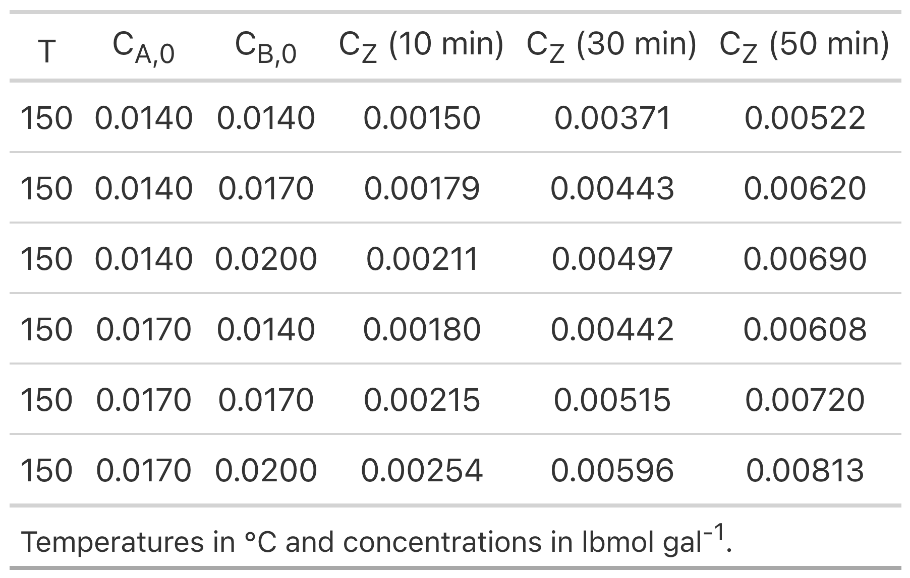
Learning Activity 27 Calculations
Learning Activity 28 Kinetics data for reaction (1) were generated in a steady-state, isothermal PFR operating at 1 atm pressure. Only one temperature was studied. The same amount of catalyst, 3.0 g, was present in the reactor, forming a small packed bed. The apparent density of the catalyst bed was constant, and pressure drop across the catalyst bed was negligible. The inlet volumetric flow rate was also the same in all experiments and equal to 0.85 L min-1 at standard temperature and pressure. The inlet mole fractions of A, B, Y, and Z were varied in the experiments and the partial pressure of A at the reactor outlet was recorded. Use the resulting data to assess the accuracy of the mechanistic rate expression shown in equation (2). The equilibrium constant, \(K\), in equation (2) can be calculated from available thermodynamic data. At the temperature of the experiments, 400 °C, the value of \(K\) is 12.2.
\[ A + B \rightarrow Y + Z \tag{1} \]
\[ r = \frac{kP_{A}P_{B}}{1 + K_AP_A + K_BP_B + K_YP_Y + K_ZP_Z }\left( 1 - \frac{P_YP_Z}{K_1P_AP_B} \right) \tag{2} \]
The experimental data are provided in the file, activity_28_data.csv. The first few data points from that file are shown in Table 9.
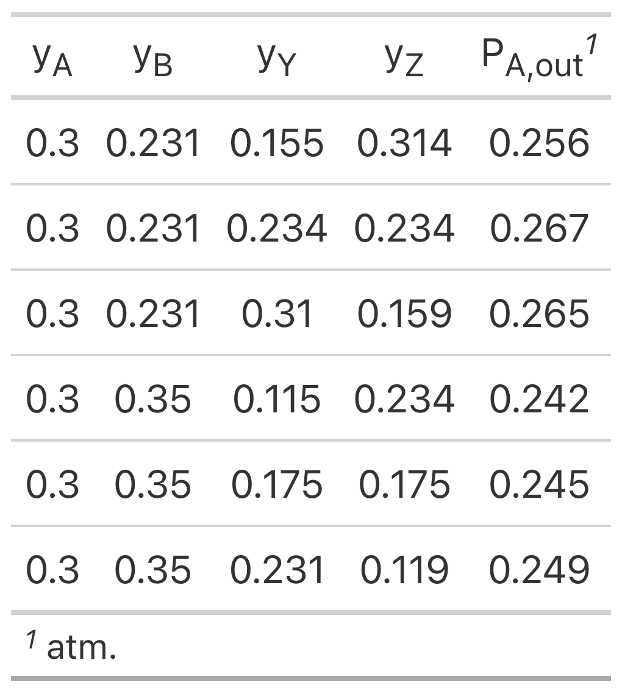
Learning Activity 28 Calculations
Learning Activity 29 An ideal, 100 cm3, isothermal BSTR was used to generate kinetics data for reaction (1) at several temperatures. In a typical experiment at any one temperature, reagent A was added to the reactor at that temperature and a pressure of \(P_{A,0}\). Then, to begin the reaction, a sufficient amount of reagent B at the same temperature was added instantaneously to bring the total pressure to 6.0 atm. The reaction progress was followed by recording the total pressure once per minute for 24 min after the addition of reagent B. Use the resulting experimental data and an approximate reactor model to make a preliminary assessment the accuracy of the rate expression shown in equation (2).
\[ A + B \rightarrow Z \tag{1} \]
\[ r = k P_A \sqrt{P_B} \tag{2} \]
The experimental data are provided in the file, activity_29_data.csv. The first few data points from that file are shown in Table 10.
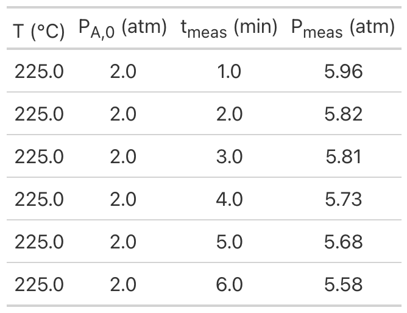
Practice Assignments from REB, The Course
Practice Assignment 25 Gas phase reaction (1) was studied in a 2 L batch reactor. Three experiments were performed, each at a different temperature. The initial reactor pressure in all experiments was 1 atm, and the starting mixture consisted of only A and B. The initial ratio of A to B was different for each experiment, and the mole fraction of Z was measured as a function of reaction time (in min) in each experiment. Determine the best values of the activation energy and pre-exponential factor for \(k\) in the proposed rate expression, equation (2), and determine whether that rate expression is accurate.
\[ A + B \rightarrow Z \tag{1} \]
\[ r=kC_AC_B \tag{2} \]
The experimental data are provided in the file, practice_25_data.csv. The first few data points from that file are shown in Table 11.
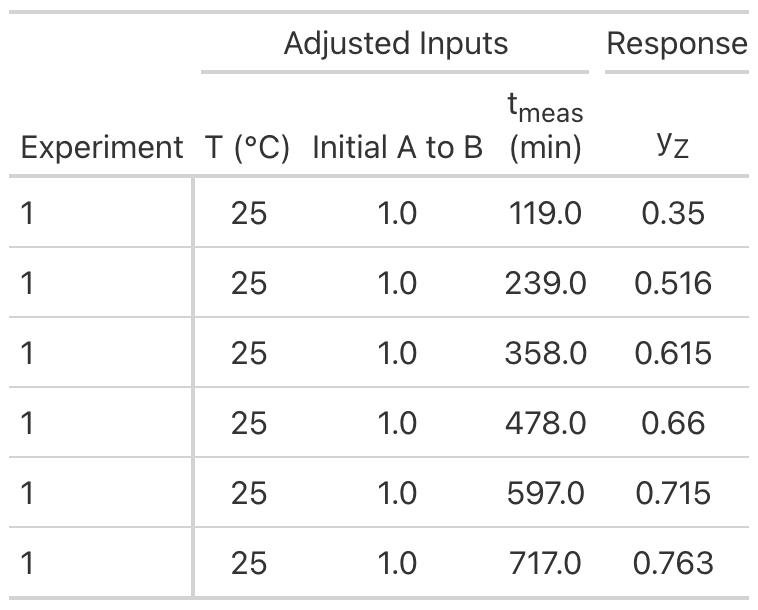
Practice Assignment 25 Solution
Practice Assignment 25 Calculations
Practice Assignment 26 An isothermal, isobaric, steady-state PFR was used to generate kinetics data for reaction (1). The reactor diameter was 2.5 cm and its length was 1 m. All experiments were performed at atmospheric pressure. The inlet volumetric flow rates of the reagents and the temperature were varied from experiment to experiment, and the ratio, \(\alpha\), of the outlet molar rate of Y to that of A was measured. The equilibrium constant for reaction (1) exhibits Arrhenius temperature dependence with a pre-exponential factor of 2.2 x 1023 atm3 and a heat of reaction of 200 kJ mol–1. Use the experimental data to estimate the pre-exponential factor and activation energy for \(k\) in the proposed rate expression, equation (2). Then decide whether the resulting rate expression is sufficiently accurate.
\[ A \rightleftarrows Y + 3Z \tag{1} \]
\[ r = kP_A \left(1 - \frac{P_YP_Z^3}{K_1P_A}\right) \tag{2} \]
The experimental data are provided in the file, practice_26_data.csv. The first few data points from that file are shown in Table 12.
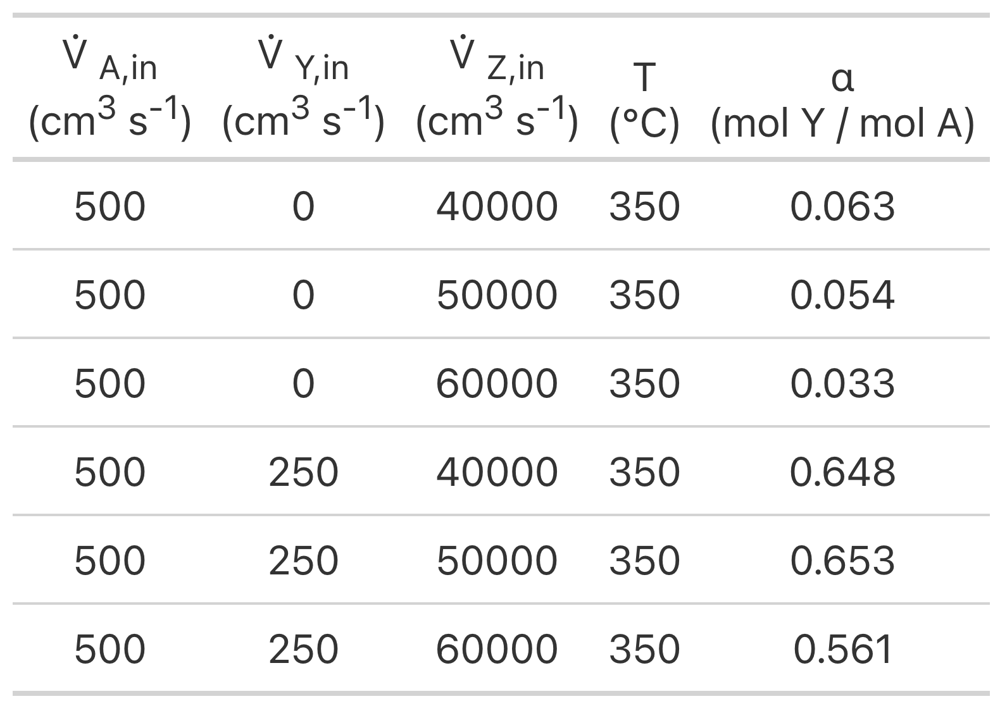
Practice Assignment 26 Solution
Practice Assignment 26 Calculations
Practice Assignment 27 A 1 L, isothermal BSTR was used to generate kinetics data for the liquid-phase reaction, equation (1). In each experiment the temperature, initial concentration of A and initial concentration of B were set, after which the concentration of A was measured at several reaction times. Use those data and a linear BSTR model to estimate the pre-exponential factor and activation energy for the rate coefficient in equation (2), and assess the accuracy of the resulting rate expression.
\[ A + B \rightarrow Y + Z \tag{1} \]
\[ r=kC_AC_B \tag{2} \]
The experimental data are provided in the file, practice_27_data.csv. The first few data points from that file are shown in Table 13.
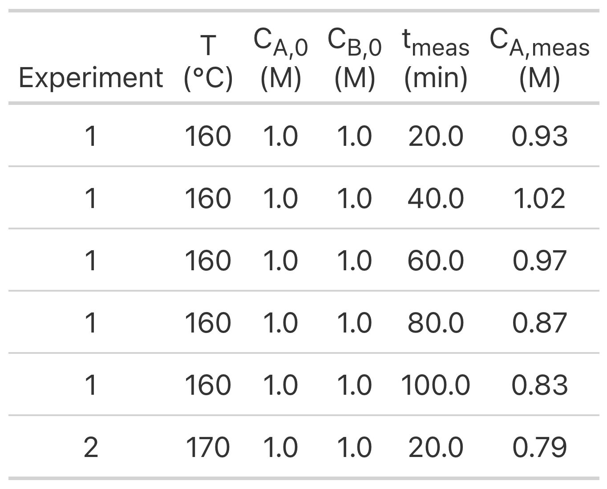
Practice Assignment 27 Solution
Practice Assignment 27 Calculations
Practice Assignment 28 Preliminary experiments have indicated that gas-phase reaction (1) is irreversible and that the rate is not affected by the concentration of the product Z. To generate kinetics data, experiments were performed at three temperatures. An ideal CSTR operating at 3 atm was used for all experiments. The feed in every experiment contained only reagents A and B. The temperature, space time, and mole fraction of A in the feed were varied from experiment to experiment, and the outlet concentration of Z was measured. The first few data are presented below. Use the resulting data to assess the accuracy of the rate expression shown in equation (2) where the power-law reaction orders, \(\alpha_A\) and \(\alpha_B\), must be estimated along with the pre-exponential factor and activation energy for the rate coefficient, \(k\).
\[ A + B \rightarrow Z \tag{1} \]
\[ r = kP_A^{\alpha_A} P_B^{\alpha_B} \tag{2} \]
The experimental data are provided in the file, practice_28_data.csv. The first few data points from that file are shown in Table 14.
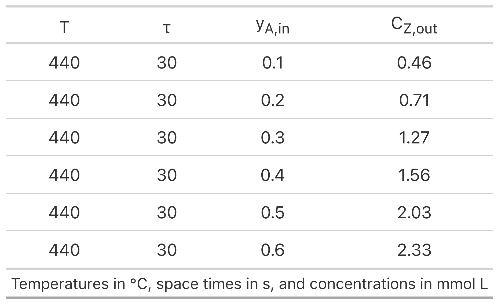
Practice Assignment 28 Solution
Practice Assignment 28 Calculations
Practice Assignment 29 Liquid-phase reaction (1) was studied in a batch reactor as the first step in generating a rate expression. Three experiments were performed. In experiment 1, the temperature was 70 °C, the initial concentration of A was 1 M and the initial concentration of B was 0.9 M. In experiment 2, the temperature was 80 °C, the initial concentration of A was 1 M and the initial concentration of B was 0.75 M. In experiment 3, the temperature was 90 °C, the initial concentration of A was 0.75 M and the initial concentration of B was 1 M. The concentration of Y was measured at several elapsed times. The resulting data are provided in Table 1. Using these data and an approximate BSTR model, find preliminary values for the pre-exponential factor and the activation energy for the second-order rate expression shown in equation (2) and recommend how to proceed.
\[ A + B \rightarrow Y + Z \tag{1} \]
\[ r=kC_AC_B \tag{2} \]
The experimental data are provided in the file, practice_29_data.csv. The first few data points from that file are shown in Table 15.
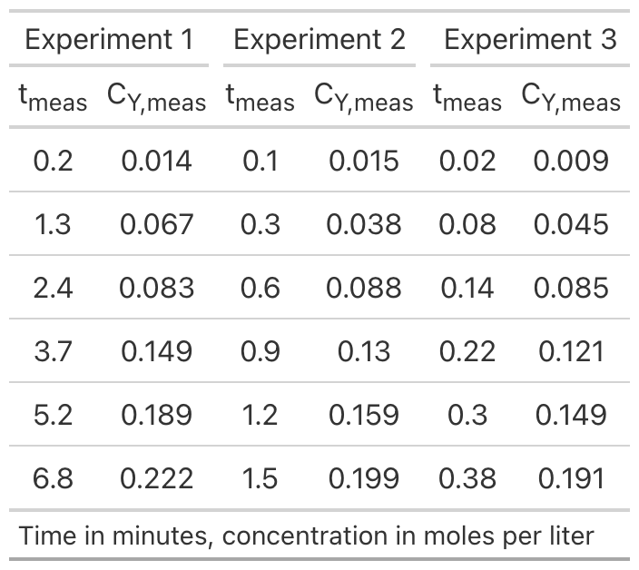
Additional Assignments for Extra Practice
Additional assignments will be added as they become available.
This website is licensed under the Creative Commons Attribution-Non-Commercial-NoDerivatives 4.0 International License (CC BY-NC-ND 4.0).